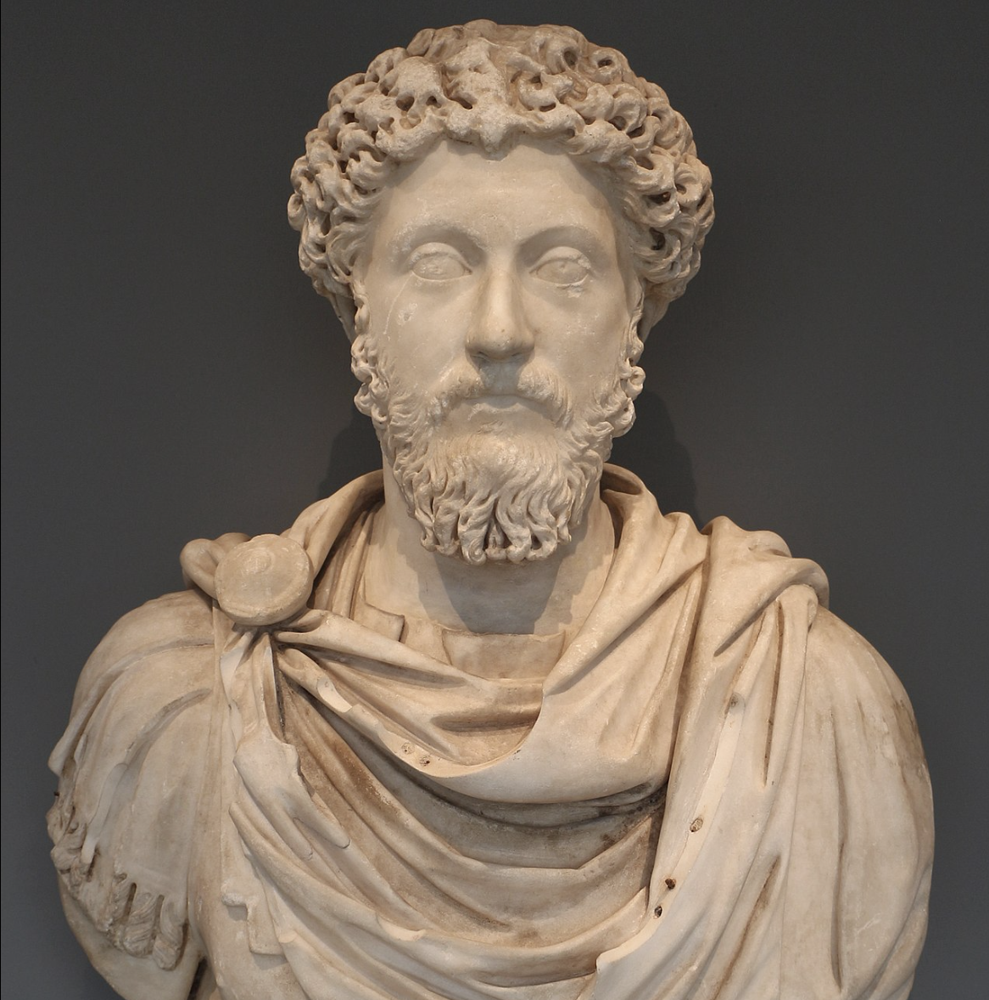
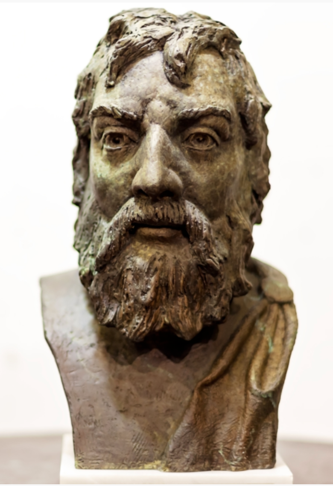
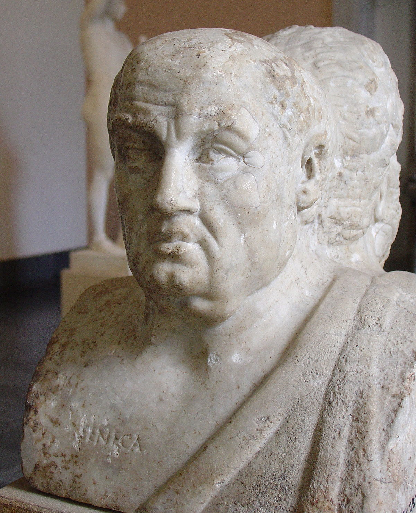

blog
The Art of Attention (Prosochē)
 Prosochē, the practice of attention, is the fundamental spiritual attitude necessary to practice Stoicism as a way of life.
It is the practice of consistent, vigilant attention to impressions, assents, desires, and actions, for the purpose of creating excellence (virtue) in one’s
inner self and thereby experiencing a good flow in life (eudaimonia).
Prosochē is essential for the prokoptōn to practice the three Stoic disciplines prescribed
by Epictetus (Discourses 3.2.1-5). Constant attention is necessary to live in agreement with Nature.
Once one embarks on the path of the prokoptōn, the attitude
of prosochē serves as an ever-present, vigilant watchman to ensure we continue to make forward progress. As Epictetus warns, relaxing our attention (prosochē)
is not only dangerous because of the faults which may be committed in the present, but he further warns that “because of your fault today your affairs must be
necessarily in a worse condition on future occasions” (Discourses 4.12.1).
The attitude and practice of prosochē focus our attention and provides the foundation
for the Stoic disciplines, whose aim is a life of excellence (aretē) lived in accordance with Nature, wherein we experience human flourishing or well-being (eudaimonia).
The Discipline of Assent
The discipline of assent entails accepting that things outside our soul cannot affect our Self—our guiding principle—the agent we refer to as 'I' during a
conversation with others and self-reflection.
It is only our thoughts that have the power to affect our serenity, and they are completely within our control. Moreover, our
guiding principle is the only thing with the power to alter (heal) itself. However, the Stoics also assert that humans are born with preconceptions that incline us to moral
behavior.
This post will not provide a detailed analysis of Stoic epistemology; however, some basics need to be covered before we can deal with the discipline of assent. I use
Pierre Hadot’s term guiding principle to designate the concept of Self—that which we refer to as “I” when we consider who is perceiving, analyzing, and deciding. Other equally
useful terms include ruling center, commanding faculty, and rational faculty.
All refer to the same thing. The Greek word is hēgemonikon, and it is comprised of three parts:
the faculties of impression, impulse and assent. Assent means agreement. When we assent to an impression, we agree with it. John Sellars breaks the process of assent into four stages:
- We perceive an external thing or event.
- We form an “almost involuntary and seemingly unconscious value judgement” (in some instances) about that thing or event.
- An impression is a proposition, formed from a perception and the value judgement, that is presented to our guiding principle (hegemonikon).
- We either assent to (agree with) the proposition or we reject it. We may also withhold judgement.
The Discipline of Desire

"True education consists precisely in this, in learning to wish that everything should come about just as it does. And how do things come about?
As the one who ordains them has ordained… It is with this order of things in mind that we should approach our education, and not so as to change the
existing order of things (for that has not been permitted to us, nor would it be better that it should be), but rather, things around us being as they
are and as their nature dictates, so that we for our part may keep our will in harmony with whatever comes to pass. (Discourses 1.12.15-17)""
Once we have an adequate understanding of The Discipline of Assent we are ready to take on the discipline of desire, which corresponds to the study and practice of Stoic physics. The discipline of desire is a powerful tool that can transform our life into one in accordance with Nature. Additionally, as Epictetus points out in Discourses 3.2.3, the discipline of desire is the most urgent of the three disciplines. However, to make use of this tool we must first grasp the Stoic concepts of human nature and cosmic Nature, and then understand the relationship between these two natures. Ultimately, the discipline of desire involves bringing our will into congruity with Nature. In this state of congruity with Nature, we will live every present moment desiring what happens rather than what we may want to happen. As we will see there is a subtle, yet immensely important, distinction between resigning ourselves to fate and learning to love our fate through the discipline of desire. This discipline will enable us to move beyond the caricature of the stoic who grins and bears the slings and arrows of outrageous fortune, to the excellence of spirit articulated by Marcus Aurelius when he wrote:
"Everything suits me that suits your designs, O my universe. Nothing is too early or too late for me that is in your own good time. All is fruit for me that your seasons bring, O nature. All proceeds from you, all subsists in you, and to you all things return." (Meditations 4.23)
The Discipline of Action

"Say to yourself at the start of the day, I shall meet with meddling, ungrateful, violent, treacherous, envious, and unsociable people. They are subject to all these defects because
they have no knowledge of good and bad. But I, who have observed the nature of the good, and seen that it is the right; and of the bad, and seen that it is the wrong; and of the wrongdoer
himself, and seen that his nature is akin to my own—not because he is of the same blood and seed, but because he shares as I do in mind and thus in a portion of the divine— I, then, can neither be harmed by these people,
nor become angry with one who is akin to me, nor can I hate him, for we have come into being to work together, like feet, hands, eyelids, or the two rows of teeth in our upper and lower jaws. To work against one another
is therefore contrary to nature; and to be angry with another person and turn away from him is surely to work against him. (Meditations 2.1)"
No other passage speaks louder to me on the topic of Stoic ethics—the discipline of action—than the one above by Marcus Aurelius. This passage capsulizes the Stoic discipline of action and differentiates Stoicism from ancient Epicureanism and Cynicism. The inner citadel (The Discipline of Assent), combined with an understanding our human nature and acceptance of our place in cosmic nature (The Discipline of Desire), prepares the Stoic for action in a tumultuous world filled with humans who are often irrational, selfish, and cantankerous. Stoics do not retreat from society to achieve equanimity; the practice of the three disciplines allows them to become excellent human beings and achieve a good flow in life within the tumult of society. When I first read the passage by Marcus above I thought, oh my, he just described the people I work with—meddling, ungrateful, violent, treacherous, envious, and unsociable. My self-righteousness was quickly deflated as I continued to consider the passage. Marcus was not criticizing those he described; his words were aimed directly at himself, and me. Marcus was suggesting we should act virtuously and justly toward others even when they are “meddling, ungrateful, violent, treacherous, envious, and unsociable.” Here, we begin to put the equanimity we gained through the disciplines of assent and desire to the test in the world of humanity. As Pierre Hadot notes:
"This fine serenity risks being disturbed by the discipline of active impulse and action, since in this case it is a matter of acting, not accepting. We now must engage our responsibility, not just consent; and we must enter into relations with beings—our fellow creatures—who provoke our passions precisely because they are our fellow creatures: beings whom we must love, although they are often hateful."
A Concious Cosmos

"The doctrine that the world is a living being, rational, animate and intelligent, is laid down by Chrysippus in the first book of his treatise On Providence, by Apollodorus in his Physics, and by Posidonius…
And it is endowed with soul, as is clear from our several souls being each a fragment of it." (DL 7.142-3)
Some people think the idea of a conscious cosmos is an antiquated relic of ancient Stoicism that we must abandon in light of modern science. However, numerous modern scientists and philosophers describe the nature
of the cosmos in ways that are compatible with the intuitions of the ancient Stoics. Some now suggest consciousness must be a fundamental aspect of the cosmos and refer to a mind-like background in the universe. A few boldly claim
the universe is conscious, just as the Stoic did more than two thousand years ago. Modern thinkers frequently label this idea panpsychism, which entails consciousness as a fundamental aspect of the cosmos.
When we consider a concept like a conscious cosmos and relate it to ancient Stoicism, we first must acknowledge that the Greeks did not have a word for conscious. The word first appears in English in the seventeenth century.
Next, we must admit that many definitions of consciousness exist today. The ancient Stoics argued the cosmos is a living being (organism) that is rational, animate, and intelligent. I cannot imagine an entity that meets all
those criteria we would deny is conscious. Instead of a conscious cosmos, we could say a rational, animate, and intelligent cosmos; however, that will not appease those who believe the universe is mechanistic, reductive to matter,
and governed by laws that just happen, accidentally, to be conducive to life as we know it here on Earth. Therefore, the term conscious serves quite well as a substitute for a living being (organism) that is rational, animate, and intelligent.
"However you look at the matter, it seems reasonable to think that the human mind isn’t self-contained or self-sustained, but connected with a mindlike wholeness. “We can ‘infer’” Menas Kafatos and Robert Nadeau suggest, “that human consciousness ‘partakes’ or ‘participates in’ the conscious universe."